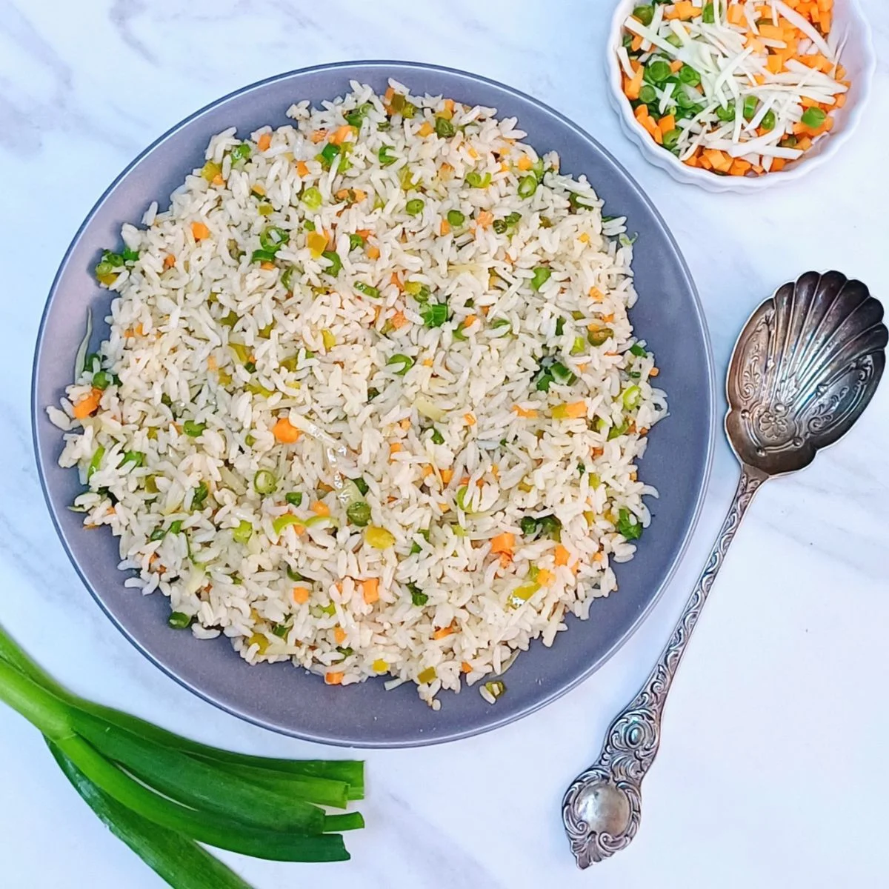

- Cooking time: 30 mins
- Makes for 4 people :)
Ingredients

- 2 cups Chinese rice
- .5 cup French beans (cut diagonally into long strips)
- .5 cup carrots (cut into thin, long strips)
- .5 cup capsicum (thin, long strips)
- 1 tbsp celery chopped
- 1 cup white spring onions (chopped)
- 1 tbsp soy sauce
- 1 cup green spring onions (chopped)
- 1 tbsp oil, salt
Instructions
- Heat oil in pan.
- Add veggies and saute over a high flame for 3-4 mins until veggies soften.
- Add rice, soy sauce, green spring onions, and salt.
- Mix well and saute for 2 mins.
- Serve hot.